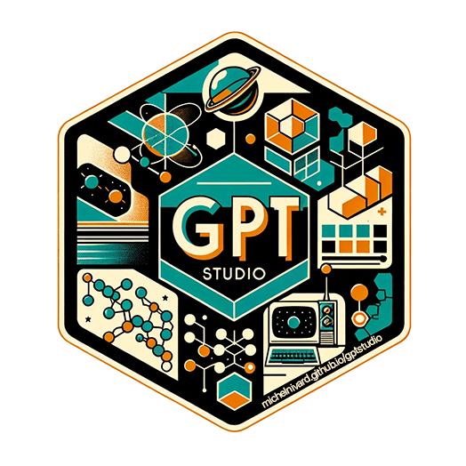
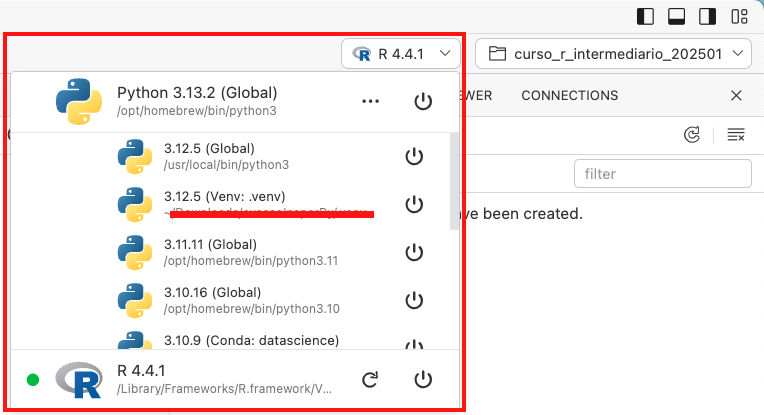

10 IDEs além do RStudio
E ferramentas de IA
A última aula do curso foi dedicada para conversar sobre as dúvidas. Durante essa aula, dois temas foram mais discutidos: outras possibilidades de ambiente de desenvolvimento integrado (IDE) como o VS Code e o Positron, e a utilização de ferramentas de inteligência artificial (IA) nessas IDEs.
Neste contexto, utilizaremos o termo IA como sinônimo de ferramentas que utilizam large language models (LLMs) para auxiliar na escrita de códigos. Ou seja: ferramentas que fazem sugestões de códigos, apresentam um chat onde é possível fazer perguntas e obter sugestão de blocos de código, etc.
A seguir, elencaremos cada uma das IDEs discutidas e as principais ferramentas de IA que podem ser utilizadas em cada uma delas.
10.1 Cuidados ao utilizar ferramentas de IA
Antes de comentar sobre as ferramentas de IA, é importante lembrar que a utilização de ferramentas de IA em ambientes de desenvolvimento pode apresentar riscos de segurança e privacidade.
Para evitar problemas, leia os termos de uso e a política de privacidade das ferramentas de IA que você está utilizando. Se você está usando uma ferramenta de IA que acessa a internet, é importante ter cuidado com os dados que você está compartilhando.
Confira se existe alguma configuração de privacidade que você pode ajustar.
Evite utilizar ferramentas de IA para escrever códigos que envolvam dados sensíveis.
Não compartilhe códigos, dados, textos ou qualquer outro formato que tenha informações sensíveis ou confidenciais com ferramentas de IA.
Essas recomendações não são exaustivas: é importante tomar muito cuidado ao lidar com dados sensíveis e confidenciais, e sempre buscar informações sobre a segurança e privacidade das ferramentas que você está utilizando. Converse com pessoas que trabalham com você, com a equipe de TI e de segurança da sua instituição, e busque informações sobre as práticas que a instituição tem recomendado para lidar com o uso de ferramentas de IA.
10.2 RStudio
Neste curso e no curso de introdução, utilizamos o RStudio (da Posit) para programar em R.
O RStudio é a IDE mais utilizada para programar em R, e foi criada para isso: ser um ambiente integrado para programar em R.
Dentre as ferramentas de IA que podem ser utilizadas no RStudio, destacamos o GitHub Copilot.
O GitHub Copilot originalmente apresenta duas funcionalidades: sugestão de códigos enquanto escrevemos, e o Copilot Chat (similar ao ChatGPT). Entretanto, no RStudio apenas a sugestão de códigos está disponível.
Para ativar o Copilot no RStudio, é necessário acessar o menu Tools > Global Options > Copilot e selecionar a opção Enable GitHub Copilot. Se o menu do Copilot não aparecer, significa que o RStudio está desatualizado1.
Será necessário fazer a autentição com a sua conta do GitHub.
Depois de ativar o Copilot, você verá as sugestões enquanto escreve o código no RStudio. Para utilizar uma sugestão, basta pressionar Tab para aceitar a sugestão.
Mas atenção: o Copilot pode sugerir códigos que não estão corretos, então é importante sempre revisar o código gerado, e entender o que ele está fazendo.
No exemplo abaixo, comecei carregando dois pacotes e com o nome de um dataset (dados::pinguins), e o Copilot sugeriu o código para criar um gráfico. Porém ao executar o código, um erro foi gerado pois o Copilot errou o nome da variável. Depois de corrigir o nome da variável, o gráfico foi gerado corretamente:
Uma dica para evitar o erro acima é colocar o resultado da função dplyr::glimpse() como comentário (#) no Script. Assim, o Copilot terá o contexto de quais são as variáveis do dataset, e poderá fazer sugestões com menos erros:
Em projetos e scripts com mais código, o Copilot tende a fazer sugestões melhores, por ter mais contexto.
Outra dica é escrever como comentários o que você quer fazer, e o Copilot faz a sugestão do código.
Confira o manual do RStudio para mais informações sobre o GitHub Copilot no RStudio.
10.2.1 {gptstudio}

O pacote {gptstudio} foi criado para facilitar o uso de LLMs quando trabalhamos com R.
Ele também funciona com outras IDEs, porém o RStudio é a IDE que apresenta a melhor integração com o pacote.
A ideia do pacote é que podemos utilizar o chat (por exemplo, do GPT) diretamente do RStudio com uma extensão (Addin). Entretanto, esse Addin funciona com Shiny, o que faz com que a sessão do R fique ocupada enquanto o chat está aberto. Ou seja: não é possível utilizar o chat e continuar a executar códigos em R ao mesmo tempo.

10.3 Visual Studio Code (VS Code)
O Visual Studio Code (VS Code) é uma IDE desenvolvida pela Microsoft, e é uma das IDEs mais populares para programar em diversas linguagens de programação. O VS Code apresenta uma loja de extensões, onde é possível instalar diversas extensões para facilitar o desenvolvimento em diversas linguagens.
Mas atenção: o VS Code não é a IDE “mais fácil” para programar em R. Existem várias configurações necessárias para programar em R no VS Code, e a experiência de programar em R no RStudio é mais amigável e simples para quem está começando.
Para saber mais sobre o uso do VS Code com R, consulte:
10.3.1 GitHub Copilot no VS Code
O VS Code oferece a experiência mais completa de integração com o GitHub Copilot2.
Para instalar o GitHub Copilot no VS Code, é necessário procurar por “GitHub Copilot” na loja de extensões, e instalar a extensão oficial.
Depois de instalar a extensão, o botão do Copilot ficará disponível ao lado da barra de pesquisa (no menu superior da tela):
Com este botão, é possível acessar o Chat do Copilot no VS Code:
O Chat do Copilot é a minha ferramenta favorita no VS Code, pois podemos fazer referência a arquivos do nosso projeto.
Exemplo de uso do Chat do Copilot, usando um arquivo Quarto (.qmd):
Perceba que o Copilot inclusive gera sugestões de blocos de códigos que podemos utilizar (neste caso, como o arquivo contém textos com marcações em Markdown, a sugestão é em Markdown):
A funcionalidade de sugestão de códigos também existe, e é similar ao que vimos no RStudio.
Dentro do script, também podemos usar o atalho Ctrl/Command + I para abrir uma caixa de texto, e escrever um prompt para o Copilot. O Copilot irá sugerir códigos baseados no prompt que você escreveu, diretamente no script.
10.3.2 Outras extensões
Como mencionado anteriormente, o VS Code possui uma loja de extensões, onde é possível instalar diversas extensões para facilitar o desenvolvimento em diversas linguagens.
Existem outras extensões que permitem utilizar ferramentas de IA no VS Code, mas para evitar a repetição de informações, apresentamos uma lista de extensões que permitem utilizar ferramentas de IA no VS Code/Positron no tópico sobre o Positron.
10.4 Positron
Um breve contexto histórico: até 2022, a empresa que desenvolvia o RStudio era chamada de… RStudio PBC. Em 2022, a empresa mudou de nome para Posit. Essa mudança de nome foi feita para refletir a expansão da empresa para além da IDE RStudio. Desde então, a Posit tem desenvolvido novas ferramentas e produtos para usar além do R, como o Positron.
O Positron é uma IDE que permite programar com Python e R. Ele é uma alternativa ao RStudio e ao VS Code, e é uma opção para quem programa em várias linguagens de programação.
O Positron é visualmente parecido com o VS Code, pois é baseado no CODE OSS (a versão open-source do VS Code). Porém, o Positron foi desenvolvido para ser usado para análise de dados com R e Python.
Comentamos anteriormente que o VS Code apresenta algumas dificuldades para programar em R: esse não é o caso do Positron, pois foi desenvolvido para facilitar o uso do R e Python. No canto superior direito da tela existe um botão que permite alternar entre R e Python:

Outra coisa muito legal é que o Positron tem acesso à loja de extensões do VS Code, então a maioria das extensões citadas anteriormente para o VS Code podem ser utilizadas no Positron.
Live da Curso-R: Positron: o filho do RStudio com o VS Code com Caio Lente.
10.4.1 GitHub Copilot no Positron
Anteriormente, comentamos que:
O VS Code oferece a experiência mais completa de integração com o GitHub Copilot, e
o Positron é baseado no CODE OSS, a versão open-source do VS Code.
Então a lógica seria que o GitHub Copilot estivesse disponível de forma completa no Positron, certo? Errado.
At√© o momento da produ√ß√£o deste texto, o GitHub Copilot não está dispon√≠vel na loja de extens√µes Positron üò≠
Como comentamos na aula sobre Git e GitHub, muitas ferramentas são desenvolvidas por lá, e o Positron é uma delas. Então fizemos uma busca nas issues do repositório a discussão sobre o GitHub Copilot no Positron, e encontramos algumas issues que abordam o assunto.
Pontos principais:
Junho/2024 - #476: A extensão do GitHub Copilot é apenas oficialmente suportada (e licenciada para funcionar) dentro do Visual Studio Code (a versão comercial da Microsoft, não a versão Open Source), então a autenticação não funcionará no Positron. A Posit está trabalhando em uma solução para isso.
Julho/2024 - #3871: “Nós gostaríamos de ter suporte para o GitHub Copilot no futuro, mas por enquanto existem muitas extensões que fornecem Chat, Completions Inline, e outras modalidades de uso de GenAI.” - Tom Mock (que trabalha na Posit)
Em resumo:
Existe limitações de licença para o uso do GitHub Copilot no Positron. A equipe da Positron está trabalhando para encontrar uma solução para isso. Por enquanto, eles recomendam explorar outras extensões que fornecem funcionalidades similares ao Copilot.
10.4.2 Outras extensões
Como mencionado anteriormente, o Positron tem acesso à loja de extensões do VS Code, então a maioria das extensões citadas anteriormente para o VS Code podem ser utilizadas no Positron.
A seguir, temos uma lista de extensões que estão disponíveis na loja de extensões do Positron (e do VS Code), e que permitem utilizar ferramentas de IA no Positron:
- Gemini Code Assist da Google
As lojas de extensão do VS Code e do Positron são muito grandes, e existem muitas extensões disponíveis.
Quando pesquisamos algum tema, MUITAS extensões podem aparecer. Nem sempre as extensões são boas ou confiáveis… Então como escolher?
Algumas dicas para ajudar a escolher uma extensão:
- Veja quem é o desenvolvedor da extensão (ou empresa responsável). Por exemplo, a extensão do Gemini Code Assist é da Google, então é uma extensão confiável.
- Veja a popularidade da extensão. Extensões mais populares tendem a ser mais confiáveis: mais pessoas já testaram, aprovaram e recomendaram por aí. Dentre as que citamos anteriormente, a Continue e Codeium são as mais populares: até agora, mais de 204 mil pessoas já baixaram a Continue, e 121 mil já baixaram o Codeium. Mas atenção: ter menos downloads não significa necessariamente que a extensão seja ruim! Ela pode ser mais recente, como é o caso do Gemini Code Assist.
- Veja também quais extensões outras pessoas da sua área estão utilizando!
10.5 Pacotes de IA para R (independentes da IDE)
Até agora, comentamos de ferramentas de IA que podem ser utilizadas nas IDEs RStudio, VS Code e Positron.
Mas existem pacotes de R que permitem utilizar ferramentas de IA diretamente no R, sem depender de uma IDE específica.
O {ellmer} é o principal pacote de R que permitem utilizar ferramentas de IA diretamente no R!
10.5.1 {ellmer}

Com o avanço dos large language models (LLM), diversos pacotes foram criados para facilitar o uso desses modelos no R. Um exemplo é o pacote {openai}, que permite o uso dos modelos da OpenAI (como o GPT) no R. Porém logo muitos provedores foram criados, e cada um com sua API e forma de uso.
O pacote {ellmer} foi criado para facilitar o uso de modelos LLM no partir do R, utilizando uma interface unificada para diversos provedores!
Ele apresenta suporte para vários provedores de LLM, como OpenAI, Ollama, Google Gemini, DeepSeek, Claude (Anthropic), entre outros. Você pode consultar a lista completa na documentação do pacote.
10.6 Material
Alguns trechos deste texto foram adaptados do post “Como começar a utilizar o GitHub Copilot?”, escrito por Beatriz Milz.
10.7 Extra
[2023] A palestra “Large Language Models no Direito” (video disponível no Youtube e código disponível no GitHub) é um exemplo de aplicação de uso de LLMs no R.
[2024]: Live da Curso-R: Positron: o filho do RStudio com o VS Code com Caio Lente.
[2025] Live da Curso-R: GitHub Copilot: a inteligência artificial no RStudio com Julio Trecenti.
Para atualizar o RStudio, acesse o site do RStudio Desktop para baixar o instalador mais recente.↩︎
É importante lembrar também que a GitHub também é da Microsoft.↩︎